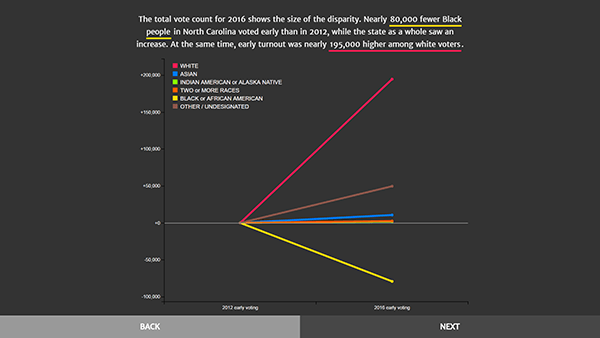

Langston Taylor
I write words. Sometimes, they're in code.
employmentxyxyx University of North Carolina at Chapel Hill School of Media and Journalism
Reporting and Commentary
investigativexyxyxy or quickycycy, fairxyxyx and boldxyxy
I've reported for major daily newspapers on tragedy, crime and activism. I've also written commentary on media and policy.
Visual Design
jqueryxyxy or illustratorxyxy, informativexyx and creativexyxy
See my work: (+)
-

DATA VISUALIZATION: In N.C., early voting up for all but Black voters
A data story using C3 and Slider.js to show how Black voters were the only racial group in North Carolina to turn out for early voting less in 2016 than in 2012. The piece includes an interview with Civil Rights Movement leader Jesse Jackson.
-
MULTIMEDIA NEWS DESIGN: UNC reacts to Donald Trump’s leaked comments and alleged sexual assault
A web project weaving video and audio interviews into a narrative story to express students’ emotional reactions to allegations of sexual assault by then-presidential candidate Donald Trump.